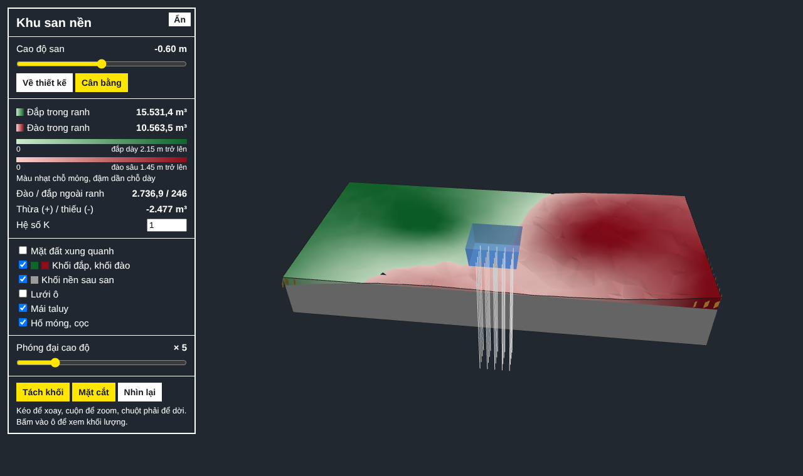
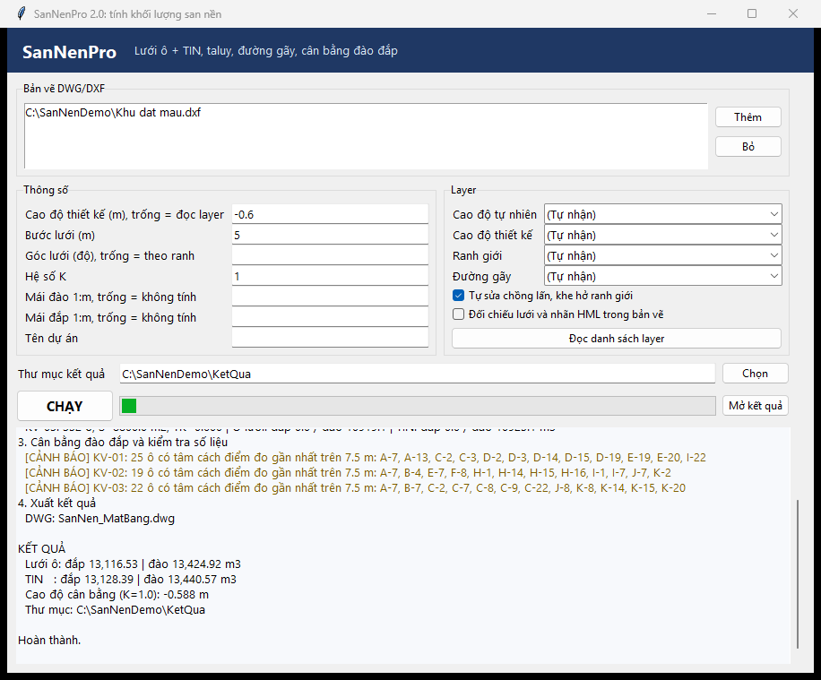
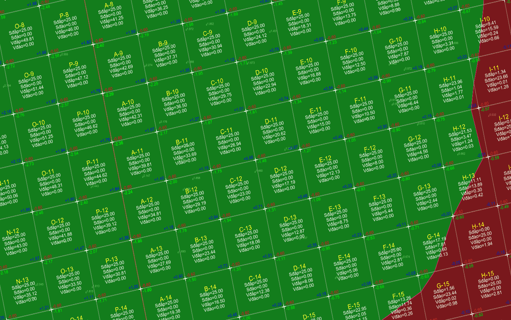
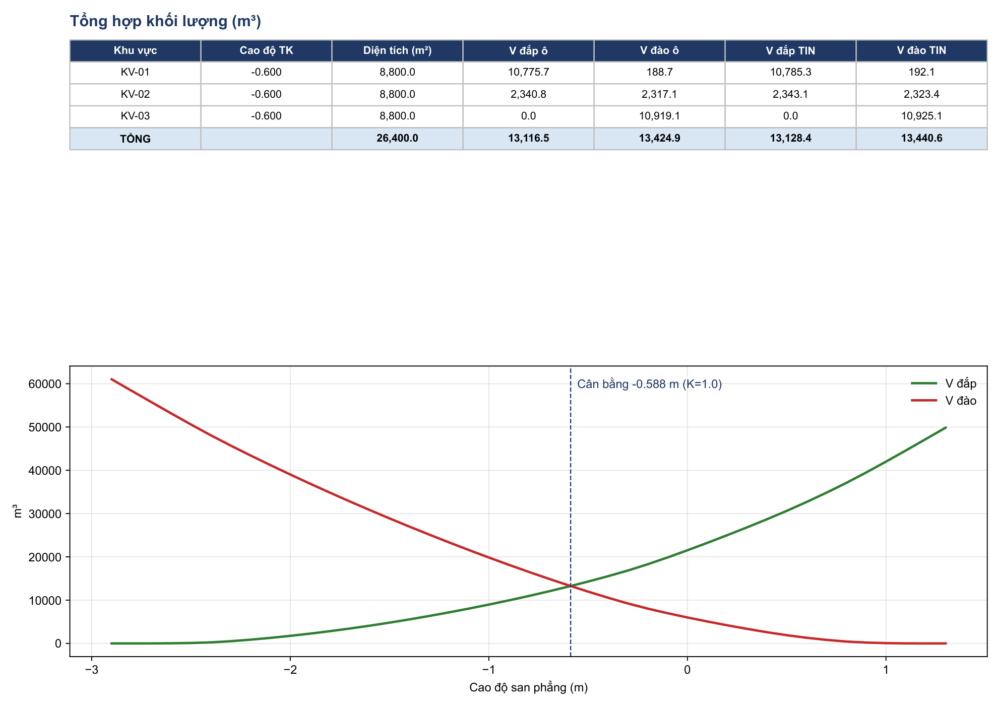

SanNenPro đọc điểm cao độ và ranh giới trong bản vẽ, chia lưới ô, tính đào đắp từng ô rồi xuất bảng khối lượng và mặt bằng. Giải nén là chạy, không cần cài Python. Đọc file DWG cần máy có AutoCAD; không có thì lưu bản vẽ sang DXF.
Mô hình 3D
Tick Xuất 3D, hoặc để AI chạy với --3d, sẽ có thêm 4 file:
| File | Mở bằng | Dùng để |
|---|---|---|
| SanNen_3D.dwg | AutoCAD, lệnh SANNEN3D | Từ bản 2.4, chạy bằng Python hoặc AI. Khối solid thật: nền sau san, khối đắp, khối đào, bóc phong hoá, hố móng, cọc, kèm hình tách khối ghi khối lượng. Chọn khối gõ MASSPROP ra đúng thể tích bảng tính |
| SanNen_3D.html | Trình duyệt, cả điện thoại | Xem màu đào đắp, kéo thanh cao độ để thử cao độ san và xem khối lượng đổi theo, bấm Cân bằng, làm mặt cắt, bấm vào ô để xem khối lượng |
| SanNen_3D.ifc | Navisworks, Revit | Kiểm tra va chạm với mô hình kết cấu, MEP. Khối đắp, đào có thuộc tính khối lượng, đặt đúng toạ độ bản vẽ |
| SanNen_TIN.xml | Civil 3D | Mặt TIN hiện trạng và thiết kế |
Mở mô hình 3D của khu đất mẫu, có hố móng, 20 cọc và taluy.

Cách dùng
- Giải nén, chạy SanNenPro.exe.
- Bấm Thêm, chọn bản vẽ.
- Nhập cao độ thiết kế, bước lưới, hệ số K. Có taluy thì nhập hệ số mái.
- Bấm CHẠY, xong bấm Mở kết quả.

Thử với file mẫu
Trong bản tải về có thư mục Mau. Chọn file mẫu, nhập cao độ thiết kế −0,6 rồi bấm CHẠY. Có thể xem kết quả trước khi tải chương trình:
- Khu_dat_mau.dxf: 620 điểm cao độ, 3 khu
- Khu_dat_mau_day_du.dxf: thêm hố móng, 20 cọc, tường chắn
- SanNen_KhoiLuong.xlsx
- SanNen_MatBang.dwg
- SanNen_BaoCao.pdf
Bản vẽ cần có
| Dữ liệu | Dạng |
|---|---|
| Cao độ tự nhiên | TEXT, MTEXT, POINT có Z, hoặc block có thuộc tính cao độ |
| Ranh giới | Polyline kín, mỗi khu một polyline |
| Cao độ thiết kế | Nhập tay, hoặc TEXT trên layer riêng |
| Đường gãy, nếu có | Line hoặc polyline, tên layer có chữ break hoặc duong gay |
| Cạnh không làm taluy | Line dọc cạnh đó, tên layer có chữ tuong chan hoặc khong taluy |
| Hố móng, tầng hầm | Polyline kín, tên layer có chữ ho mong hoặc ham, TEXT cao độ đáy đặt bên trong |
| Cọc khoan nhồi | CIRCLE đúng đường kính, tên layer có chữ coc |
Tên layer tùy ý, chương trình tự nhận. Nhận sai thì bấm Đọc danh sách layer và chọn lại.
Kết quả
| File | Nội dung |
|---|---|
| SanNen_KhoiLuong.xlsx | Bảng từng khu, tổng hợp, cân đối đất theo K, cân bằng đào đắp, taluy, hố móng, cọc, kiểm tra số liệu |
| SanNen_MatBang.dwg | Lưới, cao độ nút, đào đắp từng ô, đường 0, chân taluy |
| SanNen_BaoCao.pdf | Bản đồ đào đắp, tổng hợp, đường cong cân bằng, cảnh báo |


Cách tính
- Lưới ô: V = S × trung bình |h| các đỉnh ô, tách theo đường h = 0.
- TIN: cắt tam giác theo ô và tích phân; đường gãy được ép thành cạnh tam giác.
- Taluy: mái 1:m từ mép ranh giới đến khi gặp mặt đất, tính trên lưới 0,5 m, rộng tối đa 30 m. Hệ số mái có thể khác nhau theo khu.
- Bóc phong hoá: trừ chiều dày vào mặt đất trước khi tính; đất bóc tính riêng, không dùng lại để đắp.
- Hố móng: đáy phẳng, mái 1:m, đào từ mặt sau san nền, cộng vào đất đào.
- Cọc: V = π/4 × D² × L × số cọc, cộng vào đất đào.
- Cân bằng: tìm cao độ để đào, taluy, hố móng và cọc bằng K × tổng đắp.
- Nhiều khu: phần chồng lấn tính cho khu đứng trước, khe hở nhập vào khu kề.
Đã kiểm tra
30 phép kiểm tra có đáp số tính tay đều đạt, gồm taluy, hố móng, cọc, bóc phong hoá và cân bằng. Đối chiếu với HML trên 649 ô của một công trình thực tế, 617 ô lệch không quá 0,02. 32 ô còn lại lệch do làm tròn cao độ nút hoặc do đỉnh có h = 0.
Ví dụ thực tế
Khu đất 7 khu vực, khoảng 16.400 m², đã tính bằng HML. Chạy lại bằng SanNenPro cho thấy khu cuối sót 14 ô (191 m², khoảng 59 m³), 4 chỗ ranh giới chồng lấn tổng 55 m² bị tính hai lần và 21 m² khe hở chưa được tính.
| Lưới ô, m³ | Bảng cũ | Sau khi sửa |
|---|---|---|
| Đắp | 1.198,61 | 1.268,92 |
| Đào | 3.602,83 | 3.593,54 |
| Đất thừa, K = 1 | 2.404,22 | 2.324,62 |
Trong AutoCAD
Mở SanNenPro.exe một lần, dùng APPLOAD nạp sannen.lsp. Lệnh SANNEN mở chương trình với bản vẽ đang mở, lệnh SANNENKQ chèn mặt bằng kết quả đúng tọa độ, lệnh SANNEN3D chèn mô hình 3D.
Để AI chạy
Đây là cách dùng chính. Trợ lý AI chạy được Python làm từ đầu đến cuối mà không cần mở giao diện, mặc định xuất cả mô hình 3D. Tài liệu riêng cho AI nằm ở AGENTS.md: cách cài, quy trình, tham số, mã thoát và cấu trúc kết quả JSON. Máy không có AutoCAD thì đưa bản vẽ dạng DXF.
Điền thông số rồi dán đoạn này cho AI cùng file bản vẽ:
Dùng tool SanNenPro tại https://github.com/huyhoang31897-stack/SanNenPro để tính khối lượng san nền cho bản vẽ tôi gửi. Đọc file AGENTS.md trong repo và làm đúng quy trình đó. Cao độ thiết kế: Bước lưới: 5 m Hệ số K: Mái đào, mái đắp: Bóc phong hoá: Mái hố móng, chiều dài cọc: Thiếu thông số thì hỏi tôi, không tự đoán. Trả về bảng khối lượng, đất thừa hoặc thiếu, các cảnh báo và file kết quả.
Chưa làm được
- Đáy hố là mặt phẳng, chưa có hố giật cấp. Các hố chồng nhau sẽ tính trùng.
- Taluy một mái liên tục, chưa có cơ.
- Cọc chỉ tính đất khoan của cọc tròn, không trừ phần cọc nằm trong hố móng.
Xem sheet Kiểm tra trong file Excel và tự rà lại số liệu trước khi dùng. File chưa ký số nên Windows có thể cảnh báo khi mở lần đầu.